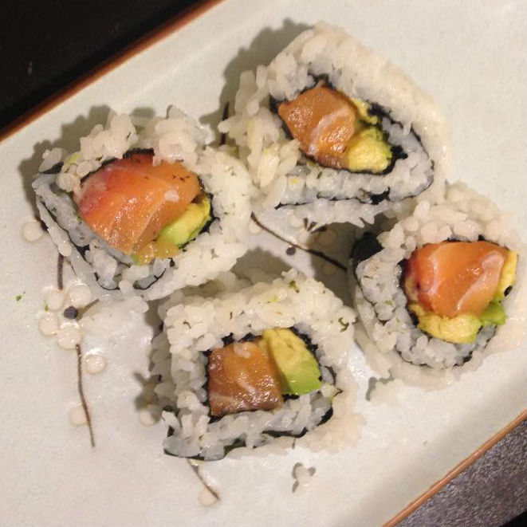

Custard Tarts, November 2015
For Thanksgiving, I had parents and some family friends come visit me in the Bay. Shared some custard-loving for the sharing holiday!

Alaskan Roll, September 2015
Sort of baking. Made Alaskan Rolls from scratch, which is a simple sushi roll consisting of salmon and avocado! Sushi is very high maintenance, but I'm glad it turned out well.